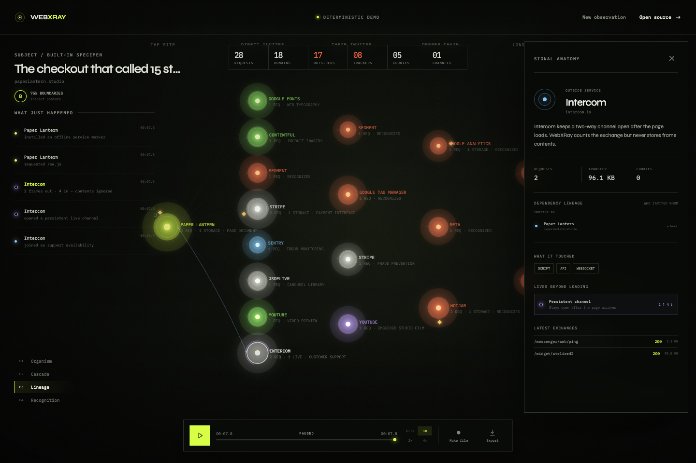

Organism
Groups the owned site core, non-recognition supply chain, and outer recognition frontier into deterministic semantic orbits.
WEBXRAY DOCUMENTATION
Install the local observatory, understand its causal model, and preserve evidence without turning the tool into another browsing-history service.
npm ci
npm run dev
Open: http://127.0.0.1:4178. The built-in 8-second demo needs no URL, account,
API key, or network access.
02 / CORE CONCEPTS
WebXRay converts sanitized browser events into a single derived model. Its canvas does not maintain four separate data sets; each lens asks a different question of the same preserved observation.
Groups the owned site core, non-recognition supply chain, and outer recognition frontier into deterministic semantic orbits.
Places services on the load timeline so you can see when each dependency first became active.
Reconstructs inviter relationships from redirects and sanitized initiators: who caused whom to appear.
Surfaces evidence that a service may recognize a visit across time or context. This is evidence, not a legal determination.

03 / WORKFLOW
Paste an HTTP or HTTPS address. URL credentials and oversized inputs are rejected before a browser launches.
Watch services assemble live, switch lenses, select signals, pause, scrub, and replay at 0.5×, 1×, 2×, or 4×.
Consent aftershock runs in a separate clean context and clicks only an unambiguous “accept all” control.
Create sanitized JSON, a portable HTML report, or a purpose-built 1280×720 WebM forensic film.
04 / PRIVACY MODEL
Processing happens on your machine with no account, telemetry endpoint, hosted database, or cloud retention. WebXRay records only the metadata needed to reconstruct a page load.
Server sessions live only in memory, are bounded in count, and expire after the configured window. The
latest completed baseline may be stored as sanitized browser localStorage metadata under 4 MB.
Use Forget on the first-run screen to remove it. Exported files remain under your control.
Values are discarded immediately. A random, scan-local HMAC may establish that a cookie changed without revealing its value. The key and derived identity do not survive the scan or enter exports.
05 / ARCHITECTURE
src/runtime/useObservation.ts owns the scan lifecycle and replay clock. Deterministic functions
in src/domain/ derive services, causal edges, cookies, recognition, and security findings. The
scanner sanitizes data before events enter retained memory.
WEBXRAY_ALLOW_REMOTE=1, but that acknowledgment does not add authentication. Put TLS,
authentication, and network controls at a trusted reverse proxy.
06 / EXPORTS
The portable raw evidence model for further analysis.
A standalone report designed to remain usable offline.
A self-playing 1280×720 canvas recording generated locally.
WebXRay cannot delete a file after you download it. Manage created exports with the operating system.
07 / CONFIGURATION
| Variable | Default | Purpose |
|---|---|---|
WEBXRAY_HOST |
127.0.0.1 | Listening address |
WEBXRAY_PORT |
4178 | Local HTTP port |
WEBXRAY_ALLOW_REMOTE |
0 | Required before non-loopback binding |
WEBXRAY_BROWSER_PATH |
auto | Explicit Chromium-compatible binary |
WEBXRAY_MAX_CONCURRENT_SCANS |
2 | Simultaneous clean browsers |
WEBXRAY_MAX_SESSIONS |
24 | Maximum retained in-memory sessions |
WEBXRAY_MAX_EVENTS |
20000 | Per-observation metadata limit |
WEBXRAY_SESSION_RETENTION_MS |
1800000 | Finished-session retention |
WEBXRAY_SCAN_TIMEOUT_MS |
60000 | Whole-observation deadline |
WEBXRAY_LOG_LEVEL |
info | quiet, info, or debug logs |
All variables are optional. Production logs intentionally omit target URLs and captured data.
08 / KEYBOARD
09 / TROUBLESHOOTING
Check http://127.0.0.1:4178/api/ready. Install the managed browser if necessary:
npx playwright install chromium
Choose another local port without changing the safe host default:
WEBXRAY_PORT=4180 npm run dev
Confirm the URL is HTTP or HTTPS with no embedded credentials. Run the deterministic demo to separate interface problems from target-network or automation policy problems.
Rebuild both artifacts, then inspect health, readiness, and the browser console.
npm run build && npm start
SECURITY NOTE
The API can launch a browser toward public, local, and private-network targets. That capability is intentional and is why the control plane must not be exposed to untrusted users. Mutating routes reject cross-site browser control, starts are rate-limited, and concurrency, events, duration, listeners, and retained sessions are bounded.
Report a vulnerability privately ↗10 / HONEST LIMITATIONS
Try another term or clear the field-guide filter.